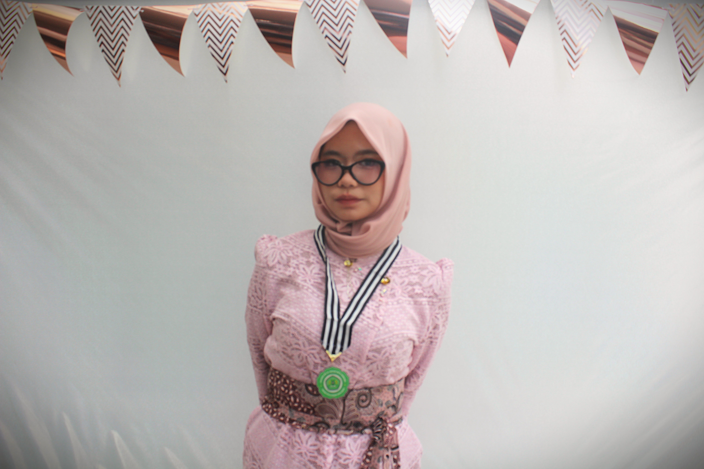
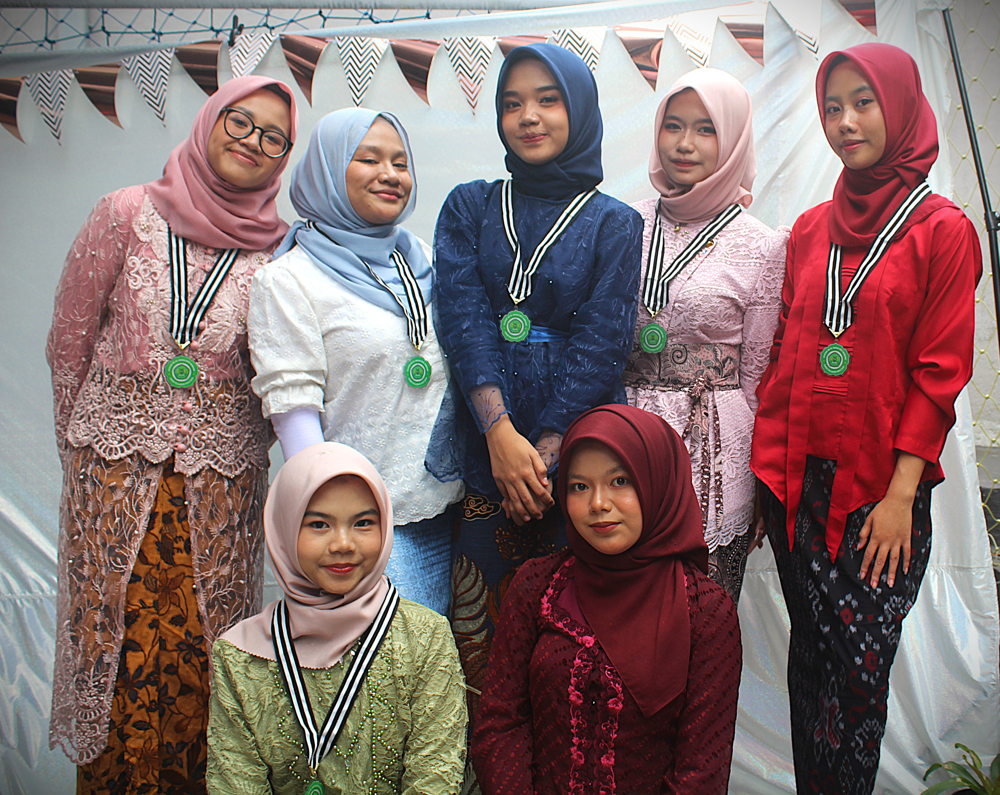
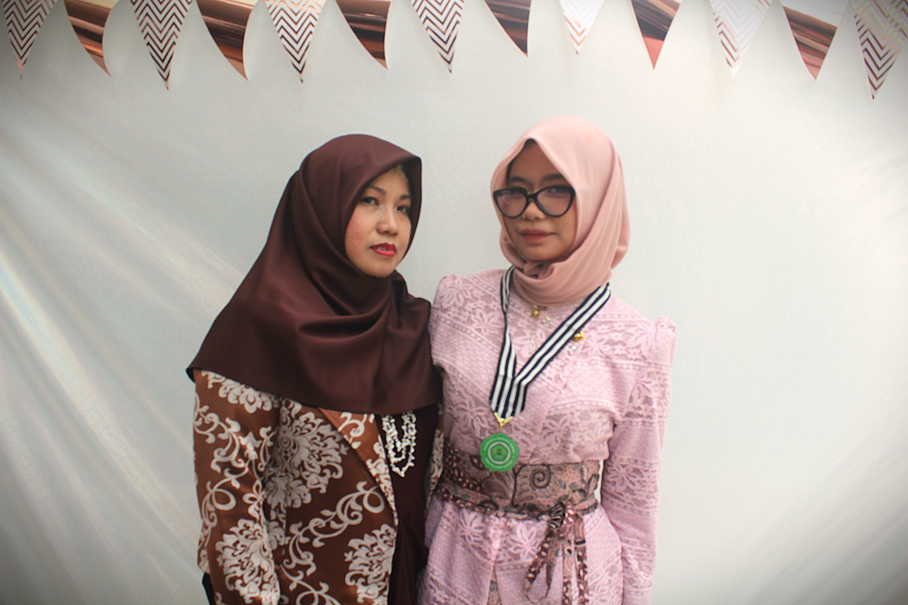
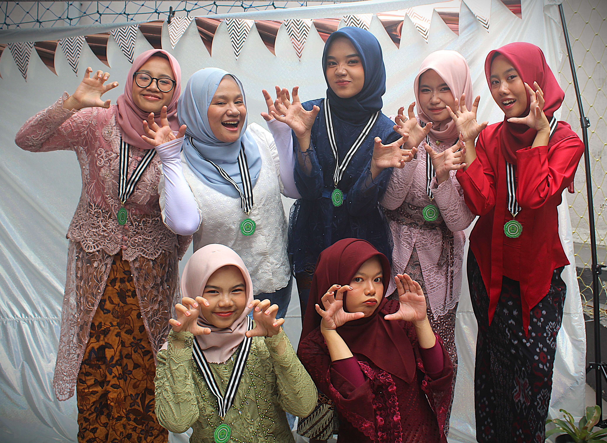
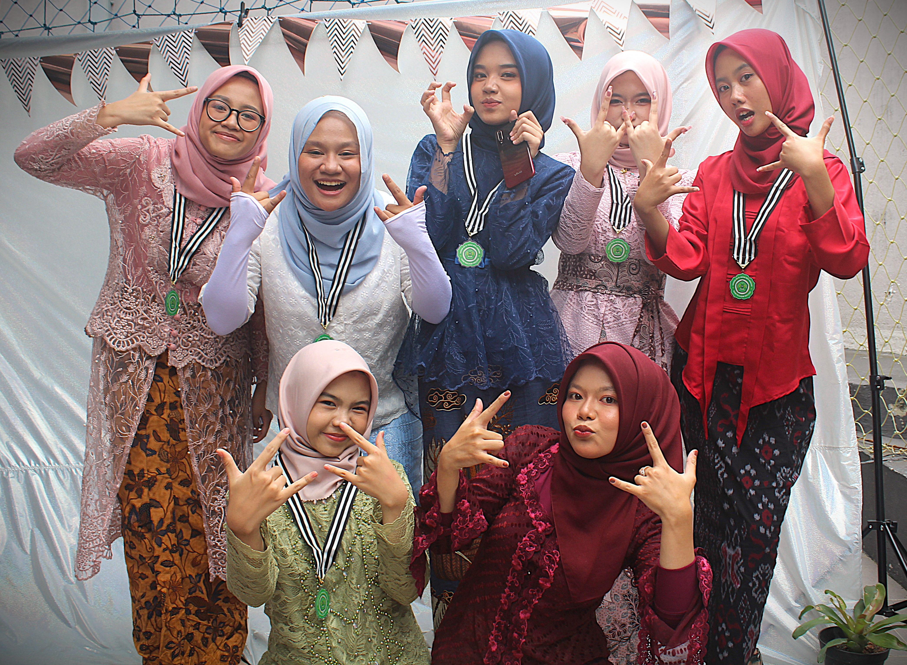
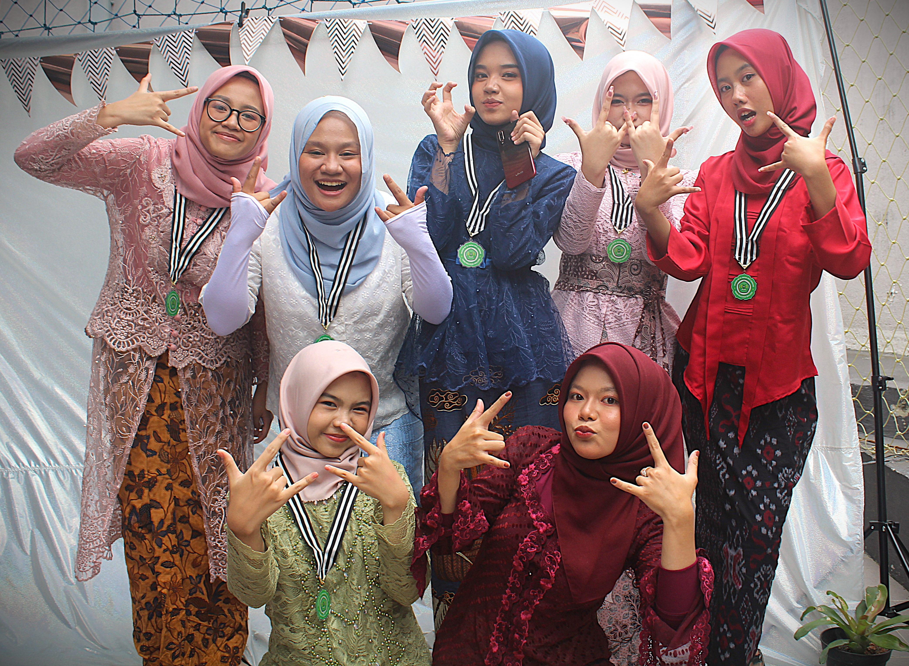

Selamat atas Kelulusannya!
Hai, Bilqis... atau boleh ya aku panggil “Bil” biar lebih akrab 😄
Selamat ya, akhirnya kamu sampai juga di garis akhir perjalanan SMA ini. Rasanya cepat banget ya? Tiba-tiba udah lulus aja. Tapi entah kenapa, meski aku nggak terlalu benar-benar mengenal kamu secara dekat, kamu termasuk salah satu orang yang... cukup meninggalkan kesan.
Aku lihat kamu itu kayak punya energi penasaran yang positif—kayak selalu pengen tahu sesuatu, selalu punya semangat buat ngerti lebih jauh. Dan itu keren, Bil. Serius. Nggak semua orang punya rasa ingin tahu yang tulus seperti itu. Dan jujur aja, dari caramu bawa diri, aku bisa bilang kamu itu anak baik.
Semoga setelah ini, jalan yang kamu pilih bisa terus bikin kamu tumbuh. Entah kamu mau jadi apa nantinya, aku harap kamu tetap jadi Bilqis yang punya rasa ingin tahu, hati yang baik, dan tetap rendah hati. Dunia ini luas, dan aku yakin kamu bisa bersinar di mana pun kamu berada.✨
Dan tentu saja, semoga kemanapun kamu melangkah, Allah selalu menyertai setiap langkahmu, memberikan kemudahan dan keberkahan. Semoga kamu senantiasa diberikan kesehatan, kekuatan, dan kebahagiaan dalam menjalani setiap proses kehidupan yang akan datang...
Ngomong-ngomong... aku juga harus jujur satu hal lagi nih.
Selain terlihat pintar dan punya semangat belajar, bagiku kamu juga punya rupa yang... ya, cukup menarik perhatian sih 😅 (tapi tenang, aku masih waras kok untuk menjaga profesionalitasku sebagai seorang guru, meski pernah ku berpikir, Ahhh seandainya saja aku terlahir di tahun yang tidak terlalu jauh denganmu dan menjadi murid ditahun yang sama, mungkin saja ada kesempatan bagi diriku ini untuk mendekatim eh... ~) ehm Maksudku, kamu punya kombinasi yang jarang seperti cerdas, sopan dan menyenangkan untuk dilihat~ baik dari luar maupun dalam.
sedikit curhat, ya? Maaf ya, aku hanya ingin mengungkapkan apa yang ada di pikiranku. yang ga bisa aku ungkapkan secara langsung.
Aku tidak ingin mengganggu perjalananmu, tapi aku ingin kamu tahu bahwa aku selalu ada untuk mendukung dan mendo'akanmu. Jika suatu saat kamu butuh seseorang untuk berbagi cerita, atau sekadar ngobrol tentang hal-hal yang kamu suka, jangan ragu untuk menghubungiku. Aku akan senang sekali mendengarnya.
Perjalanan ini masih terus berlanjut, masih banyak waktu untuk mengeksplorasi setiap hal yang ingin dipelajari. Jangan ragu untuk mencoba hal-hal baru, selama hal itu masih dalam ranah kebaikan dan teruslah tumbuh menjadi versi terbaik dari dirimu.
Begitupun dengan aku sendiri, masih banyak sekali hal yang harus aku kejar dan kuperbaiki dalam hidup ini.
Oh ya, sedikit hal kecil yang cukup aku syukuri adalah ketika kita sempat meng-cover lagu dan juga main game online bareng. Meski cuma lewat layar dan suara, rasanya menyenangkan bisa satu tim sama kamu. Menang ataupun kalah, bagiku bisa bermain bersamamu itu sendiri sudah terasa seperti sebuah kemenangan. Karena dari situ, aku merasa punya sedikit waktu untuk lebih dekat dengan versi santaimu...🤗
Dimomen yg spesial ini, mungkin hanya ini yang bisa aku sampaikan. Lewat website sederhana yang kubuat sebagai ucapan selamat untuk kamu. Semoga kamu suka...
Sekali lagi, selamat ya, Bil. Kamu layak mendapatkan semua hal baik yang akan datang. Dan... siapa tahu, mungkin suatu hari nanti kita bisa ngobrol lebih dari sekadar ucapan selamat ini 😊
Graduation moment
Berikut beberapa momen spesial kamu dihari kelulusan ini.
    
